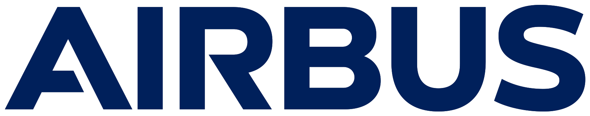
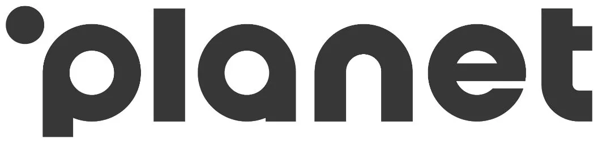
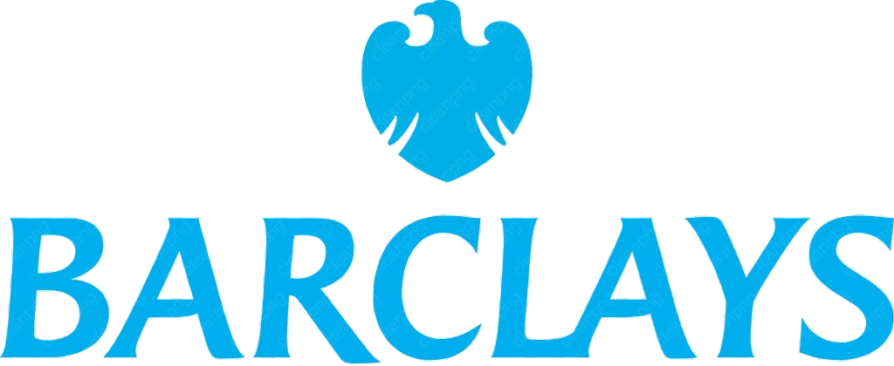
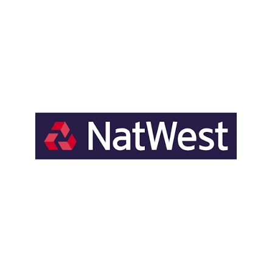

Gary is a senior technology transformation leader with 25+ years directing complex, multi-vendor programmes across Financial Services and global enterprises, with authority over single programmes worth up to £300m and £1bn+ in aggregate portfolio experience. Proven in taking control of high-risk delivery environments, recovering challenged programmes and driving large-scale technology migration through to successful execution.
Four capabilities drawn directly from Gary's track record, each directly transferable to a complex, multi-vendor technology migration operating through an evolving architecture and transition state.
Establishes integrated governance, accountability and delivery control across complex programmes, from a standing start.
Experienced coordinating major suppliers, internal technology teams and complex cross-vendor dependencies.
Strong track record across large technology migrations, transitions and transformation programmes at scale.
Able to absorb programme complexity, challenge delivery positions and give senior sponsors clear decisions, not operational noise.
Three engagements chosen for their direct relevance to a delivery lead mandate on SSIS: entering a challenged environment and establishing control, mobilising a large multi-country programme at speed, and leading complex application and supplier transition at scale.
Programme Director, TATA Consultancy Services (client: PLANET Payments)
Transition Programme Director, HCL Technologies (client: Airbus)
Transformation Programme Director, HCL Technologies (client: Thomson Reuters)
Programme & Portfolio Director roles across Financial Services

Airbus
PLANET Payments
Barclays
NatWestBased on Gary's discussion of the SSIS environment. This reflects his proposed operating approach to the engagement, not prior delivery on this programme.
Within the first two to three weeks, stand up a single integrated milestone-level plan, a single RAID log across all vendors, a single action log, and a weekly delivery/OpCo board chaired with named, accountable vendor leads in the room.
Feed architecture a prioritised list of the decisions delivery genuinely cannot wait for, testing every intermediate decision against the target end-state. Treat any interface or workaround that makes migration materially harder as technical debt, taken on consciously with an owner and an agreed cost.
Challenge individual workstream "green" status using dependency health, integration test evidence, and independent challenge from an assurance function outside the workstream leads. Protect testing from schedule compression through layered testing: component, integration, end-to-end business process, then full dress rehearsal.
Intervene early when milestones move, evaluating the plan against the evidence and using scope, sequencing, parallelisation, resourcing and timeline levers to recover delivery, rather than relying on optimistic reporting to make up lost time.
Own day-to-day IT delivery in full: the integrated plan, dependencies, vendor performance, technical decisions within agreed architecture, risk management, operational readiness, cutover mechanics and go/no-go recommendation. Escalate only what changes sponsor commitments on scope, cost, timeline or regulatory position, or requires executive air-cover with Standard Life, Aegon or vendor leadership.
Gary has directed £100m+ Transition & Transformation programmes across Financial Services, Aviation, Payments, Public Sector and FTSE 250-listed corporations, with £300m+ single-programme authority and £1bn+ aggregate portfolio experience.
Gary has repeatedly entered red-rated, high-risk delivery environments and established control quickly, moving programmes at PLANET Payments and Airbus from red to amber/green within 30 to 90 days through governance reset and recovery planning.
Gary has mobilised and run large programmes spanning multiple countries, business units and concurrent workstreams, matrix-managing global delivery teams and strategic suppliers across regulated, multi-jurisdictional environments.
Gary's Financial Services experience spans Deutsche Bank, Barclays, Lloyds Banking Group, NatWest, RBS and Credit Suisse, giving him sustained credibility operating in FCA / PRA-regulated environments at executive level.